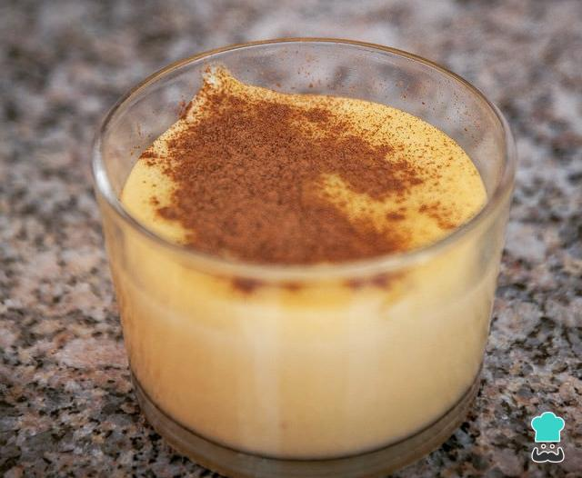

Mingau de milho verde

INGREDIENTES
• 200ml de leite
• açúcar à gosto
• 02 colheres (sopa) de fubá de milho
• sal à gosto
• canela em pó à gosto
PORÇÕES
Serve 1 pessoas
TEMPO DE PREPARO
20 minutos
PASSO A PASSO
1. Em uma panela, coloque todos os ingredientes, misture e leve ao fogo.
2. Deixe cozinhar por 15 minutos, mexendo sempre.
3. Retire do fogo.
4. Povilhe canela em pó e sirva.